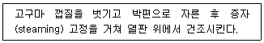
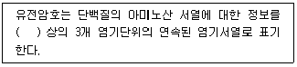

식품기사 (2014-03-02 기출문제)
1과목: 식품위생학
1. DL-멘톨은 식품첨가물 중 어떤 종류에 해당되는가?
- 보존료
- 착색료
- 감미료
- 착향료
(정답률: 73%)

2. 다음 중 이질균은?
- Salmonella
- Shigella
- Staphylococcus
- Clostridium
(정답률: 87%)
3. 식품을 저장할 때 사용되는 식염의 작용 기작 중 미생물에 의한 부패를 방지하는 가장 큰 이유는?
- 염소이온에 의한 살균작용
- 식품의 탈수작용
- 식품용액 중 산소 용해도의 감소
- 유해세균의 원형질 분리
(정답률: 78%)
4. 폐수의 오염도를 나타내는 것으로만 묶여진 것은?
- BOD, AOD
- COD, FOD
- AOD, FOD
- BOD, COD
(정답률: 88%)
5. 실험동물에 대한 최소 치사량을 나타내는 것으로만 묶여진 것은?
- MLD
- LC50
- ADI
- MNEL
(정답률: 67%)
6. 파리에 의하여 전파되는 질병과 가장 관계가 먼 것은?
- 장티푸스
- 파라티푸스
- 이질
- 발진티푸스
(정답률: 63%)
7. 동물의 변으로부터 살모넬라균을 검출하려 할 때 처음 실시해야 할 배양은?
- 확인배양
- 순수배양
- 분리배양
- 증균배양
(정답률: 71%)
8. HACCP의 일반적인 특성에 대한 설명으로 옳은 것은?
- 기록유지는 사고 발생 시 역추적하기 위하여 시행되어야 하나 개인의 책임소지를 판단하는데 사용하는 것은 바람직하지 않다.
- 식품의 HACCP 수행에 있어 가장 중요한 위험요인은 "물리적>화학적>생물학적" 요인 순이다.
- 공조시설계통도나 용수 및 배관처리계통도 상에서는 폐수 및 공기의 흐름 방향까지 표시되어야 한다.
- 제품설명서에 최종제품의 기준·규격 작성은 반드시 식품공전에 명시된 기준규격과 동일하게 설정하여야 한다.
(정답률: 74%)
9. 식품을 조리 또는 가공할 때 생성되는 독성물질과 관련이 적은 것은?
- benzo[a]pyrene
- paraben
- tryptophan pyrolysate
- benze[a]anthracene
(정답률: 68%)
10. 다음 식중독 세균과 주요원인식품의 연결이 가장 부적절한 것은?
- 병원성 대장균 - 생과일주스
- 살모넬라균 - 달걀
- 클로스트리디움 보툴리눔 - 통조림식품
- 바실러스 세레우스 - 생선회
(정답률: 79%)
11. 사람의 1일 섭취허용량(acceptable daily intake, ADI)을 계산하는 식은?
- ADI = MNFL x 1/100 x 국민의 평균체중
- ADI = MNFL x 1/10 x 성인남자 평균체중
- ADI = MNFL x 1/10 x 국민의 평균체중
- ADI = MNFL x 1/100 x 성인남자 평균체중
(정답률: 86%)
12. 내분비계 장애물질에 대한 설명으로 틀린 것은?
- 체내의 항상성유지와 발달과정을 조절하는 생체내 호르몬의 작용을 간섭하는 내인성 물질이다.
- 일반적으로 합성 화학물질로서 물질의 종류에 따라 교란시키는 호르몬의 종류 및 교란방법이 다르다.
- 쉽게 분해되지 않고 화학적으로 안정하여 환경 혹은 생체내에 지속적으로 수년간 잔류하기도 한다.
- 수용체 결합과정에서 호르몬 모방작용, 차단작용, 촉발작용, 간접영향작용 등을 한다.
(정답률: 69%)
13. 식품취급자가 화농성 질환이 있는 경우 감염되기 쉬운 식중독 균은?
- 장염 vibrio균
- Botulinus균
- Salmonella균
- 황색 포도상구균
(정답률: 87%)
14. 환자의 소변에 균이 배출 되어 소독에 유의해야 되는 감염병은?
- 장티푸스
- 콜레라
- 이질
- 디프테리아
(정답률: 77%)
15. 어패류의 부패에 관련된 설명으로 옳은 것은?
- 일반적으로 백색육 생선은 적색육 생선보다 부패속도가 빠르다.
- 스트레스 등의 치사조건은 어패류의 사후 품질에 영향을 주지 않는다.
- 굴의 부패속도가 느린 것은 다량 포함된 glycogen이 젖산으로 분해되어 산성 pH가 오래 유지되기 때문이다.
- 일반적으로 부패세균은 산성 영역에서 잘 증식하므로 어패류의 산도는 부패속도 추정의 좋은 요소이다.
(정답률: 63%)
16. 핵분해생성물 중에서 보통 식품위생상 문제가 되는 것은 그 생성률이 비교적 크고 반감기가 긴 것인데 이와는 달리 반감기가 짧으면서도 생성량이 비교적 많아서 문제가 되는 것은?
- 스트론튬 90
- 세슘 137
- 요오드 131
- 우라늄 238
(정답률: 77%)
17. 다음 중 식품영업에 종사할 수 있는 자는?
- 후천성면역결핍증 환자
- 피부병 기타 화농성 질환자
- 콜레라 환자
- 비전염성 결핵 환자
(정답률: 86%)
18. 수인성 전염병에 속하지 않는 것은?
- 장티푸스
- 이질
- 콜레라
- 파상풍
(정답률: 82%)
19. 알레르기(Allergy)성 식중독을 일으키는 원인 물질은?
- 라이신(lysine)
- 아르기닌(arginine)
- 히스타민(histamine)
- 카페인(caffeine)
(정답률: 90%)
20. 저렴하고 착색성이 좋아 단무지와 카레가루 등에 광범위하게 사용되었던 염기성 황색색소로 발암성 등 화학적 식중독 유발 가능성이 높아 사용이 금지되고 있는 것은?
- Auramine
- Rhodamine B
- Butter yellow
- Silk scarlet
(정답률: 82%)
2과목: 식품화학
21. β-amylase가 작용하는 곳은?
- α-1, 4-glucoside 결합
- β-1, 4-glucoside 결합
- α-1, 6-glucoside 결합
- β-1, 6-glucoside 결합
(정답률: 73%)
22. 결합수에 대한 설명으로 옳은 것은?
- 식품 중에 유리상태로 존재한다.
- 건조시에 쉽게 제거된다.
- 0℃ 이하에서 쉽게 얼지 않는다.
- 미생물의 발아 및 번식에 이용된다.
(정답률: 80%)
23. 메밀전분을 갈아서 만든 유동성이 있는 액체성 물질을 가열하고 난 뒤 냉각하였더니 반고체 상태(묵)가 되었다. 이 묵의 교질 상태는?
- gel
- sol
- 염석
- 유화
(정답률: 84%)
24. 식육에 대한 설명으로 틀린 것은?
- 식육의 색은 주로 myoglobin에 의한 것이다.
- 염지육은 소금과 질산염을 혼합하여 제조한다.
- 식육의 myoglobin 함량은 동물의 나이에 따라 다르다.
- myoglobin 은 열에 안정하다.
(정답률: 82%)
25. 물과의 친화력이 가장 큰 반응 그룹은?
- 수산화기(-OH)
- 알데히드기(-CHO)
- 메틸기(-CH3)
- 페닐기(-C6H5)
(정답률: 88%)
26. 아래의 고구마 가공 공정에서 박편으로 자른 후 갈변현상이 나타났을 때 그 원인은?

- 부패에 의한 갈변
- 캐러멜화에 의한 갈변
- 효소에 의한 갈변
- 아스코르브산 산화반응에 의한 갈변
(정답률: 80%)
27. 유지의 산화속도에 영향을 미치는 인자에 대한 설명으로 틀린 것은?
- 이중결합의 수가 많은 들기름은 이중결합의 수가 상대적으로 적은 올리브유에 비해 산패의 속도가 빠르다.
- 수분활성도가 매우 낮은 상태(Aw 0.2 정도)fh 분유를 보관하면 상대적으로 지방산화속도가 느려진다.
- 유탕처리 시 구리성분을 기름에 넣으면 유지의 산화속도가 빨라진다.
- 유지를 형광등 아래에 방치하면 산패가 촉진된다.
(정답률: 64%)
28. oil in water(O/W)형의 유화액은?
- 우유
- 버터
- 쇼트닝
- 옥수수 기름
(정답률: 82%)
29. 감미가 강한 순서대로 나열된 것은?
- sucrose > glucose > maltose > lactose
- glucose > maltose > sucrose > lactose
- sucrose > maltose > glucose > lactose
- glucose > sucrose > maltose > lactose
(정답률: 76%)
30. 클로로필(chlorophyll)을 알칼리로 처리하였더니 피돌(phytol)이 유리되고 용액의 색깔이 청록색으로 변했다. 다음 중 어느 것이 형성된 것인가?
- pheophytin
- pheophorbide
- chlorophyllide
- chlorophlline
(정답률: 77%)
31. 저칼로리의 설탕대체품으로 이용되면서 당뇨병 환자들을 위한 식품에 이용할 수 있는 성분은?
- 자일리톨
- 젖당
- 맥아당
- 갈락토오스
(정답률: 87%)
32. 단면적이 1m2 인 A식품과 4m2인 B식품에 100N의 힘이 작용할 때 두 물체에 작용하는 응력(stress)의 관계는?
- A > B
- A < B
- A = B
- AB = 1
(정답률: 76%)
33. 냄새를 나타내는 화학성분에 대한 설명으로 틀린 것은?
- 에스테르(ester)류는 과일과 꽃의 향기성분이다.
- 포도당을 가열하면 퓨란(furan), 페놀(phenol) 등의 냄새성분이 생긴다.
- 육류나 어류의 선도가 저하되었을 때 발생하는 자극성 냄새의 원인성분은 암모니아(ammonia)이다.
- 신선한 우유에 다량 함유된 휘발성 carbonyl 화합물은 살균처리 과정에서 없어진다.
(정답률: 61%)
34. 소비자의 선호도를 평가하는 방법으로써 새로운 제품의 개발과 개선을 위해 주로 이용되는 관능 검사법은?
- 묘사 분석
- 특성차이 검사
- 기호도 검사
- 차이식별 검사
(정답률: 88%)
35. 외부의 힘에 의하여 변형된 물체가 그 힘을 제거하여도 원상태로 돌아오지 않는 성질은?
- 탄성(elasticity)
- 점탄성(viscoelasticity)
- 점성(viscosity)
- 소성(plasticity)
(정답률: 85%)
36. 유지의 산화로 생성되며, 산패취의 원인물질과 거리가 가장 먼 것은?
- 알데히드(aldehyde)
- 에테르(ether)
- 알코올(alcohol)
- 케톤(ketone)
(정답률: 48%)
37. 다음 중 유화식품이 아닌 것은?
- 우유
- 버터
- 달걀
- 마요네즈
(정답률: 79%)
38. 식품의 텍스처를 측정하는 texturometer에 의한 texture-profile로부터 알 수 없는 특성은?
- 탄성
- 저작성
- 부착성
- 안정성
(정답률: 81%)
39. 펙트산(pectic acid)의 단위 물질은?
- galactose
- galacturonic acid
- mannose
- mannuronic acid
(정답률: 71%)
40. 동물성식품과 단백질 함량이 많은 식품을 상압가열건조법을 이용하여 수분측정 시 적합한 가열온도는?
- 98 ~ 100℃
- 100 ~ 103℃
- 1⑤℃ 전후
- 110℃ 이상
(정답률: 65%)
3과목: 식품가공학
41. 과실 주스의 풍미와 빛깔을 좋게 하는 가장 알맞은 살균방법은?
- 저온살균(pasteurization)
- 고온 순간 살균
- 50℃정도에서 48시간 서서히 가온
- 살균하지 않아도 품질에는 전혀 관계가 없다.
(정답률: 67%)
42. 옥수수 전분 제조 공정에서 얻어지는 부산물 중 기름을 얻는데 쓰이는 것은?
- 배아
- 글루텐 사료(gluten feed)
- 글루텐 박(gluten meal)
- 종피
(정답률: 79%)
43. 전분의 가수분해정도(DE : dextrose equivalent)에 따른 변화가 바르게 설명된 것은?
- DE가 증가할수록 점도가 낮아진다.
- DE가 증가할수록 감미도가 낮아진다.
- DE가 감소할수록 삼투압이 높아진다.
- DE가 감소할수록 결정성이 높아진다.
(정답률: 60%)
44. 맥아로 물엿을 만들 때 당화온도가 50℃ 정도로 낮아질 경우 어떤 현상이 나타날 수 있는가?
- 고온성 젖산균이 번식하여 시어진다.
- 부패균이 번식하여 쓴맛이 난다.
- 쌀알갱이가 완전히 풀어진다.
- 당화효소의 활성이 없어진다.
(정답률: 63%)
45. 달걀이나 오리알을 이용한 피단 제조에 있어 관여되지 않는 것은?
- 침투작용
- 응고작용
- 훈연작용
- 발효작용
(정답률: 73%)
46. 보통 산분해 간장은 단백질 원료를 산으로 가수분해하여 얻는다. 이 때 주로 사용하는 산은?
- HNO3
- H2SO4
- H2CO3
- HCl
(정답률: 63%)
47. 가당연유의 예열 목적이 아닌 것은?
- 미생물 살균, 효소를 파괴하기 위해
- 첨가한 설탕의 완전한 용해를 시키기 위해
- 농축 시 가열면의 우유가 눌어붙는 것을 방지하여 증발이 신속히 되게 위해
- 단백질에 적당한 열변성을 주어서 제품의 농후화를 촉진시키기 위해
(정답률: 68%)
48. 냉동 육류의 drip 발생 원인과 가장 거리가 먼 것은?
- 식품 조직의 물리적 손상
- 단백질의 변성
- 세균 번식
- 해동경직에 의한 근육의 강수축
(정답률: 76%)
49. 소시지 제조시 silent cutter나 emulsifier를 사용해서 얻을 수 있는 효과가 아닌 것은?
- meat emulsion의 파괴
- 혼합(blending)
- 세절(cutting)
- 이기기(kneading)
(정답률: 67%)
50. z값이 8.5℃인 미생물을 순간적으로 138℃까지 가열시키고 이 온도를 5초 동안 유지한 후에 순간적으로 냉각시키는 공정으로 살균 열처리를 할 때, 이 살균공정의 F121값은?
- 125초
- 250초
- 375초
- 500초
(정답률: 51%)
51. 정미의 도정률(정맥률)은?
- 현미량/정미량 x100
- 정미량/현미량 x100
- 탄수화물양/현미량 x100
- 현미량/탄수화물양 x100
(정답률: 78%)
52. 어떤 공정에서 F121=1min 이라고 한다. 이 공정을 101℃에서 실시하면 몇 분간 살균하여야 하는가? (단, z=10℃로 한다.)
- 10분
- 18분
- 100분
- 118분
(정답률: 63%)
53. 마가린을 제조하려고 한다. 원료유의 융점이 몇 도 되는 것을 택하면 좋은가?
- 10~20℃
- 25~35℃
- 40~50℃
- 55~65℃
(정답률: 58%)
54. 균질의 주목적이 아닌 것은?
- 우유 중의 지방구의 분리를 방지한다.
- 우유 중의 지방구의 크기를 작게 분쇄한다.
- 소화가 잘 된다.
- 살균을 용이하게 한다.
(정답률: 68%)
55. 레드와인 제조 공정 중 주발효가 끝난 후 행하여야 할 공정은?
- 후발효
- 압착 및 여과
- 제재
- 저장
(정답률: 76%)
56. 건제품과 그 특성의 연결이 틀린 것은?
- 동건품 - 물에 담가 얼음과 함께 얼린 것
- 자건품 - 원료 어패류를 삶아서 말린 것
- 염건품 - 식염에 절인 후 건조시킨 것
- 소건품 - 원료 수산물을 날것 그대로 말린 것
(정답률: 77%)
57. 미생물 자체를 이용한 것은?
- 잎단백질 농축물
- 단세포 단백질
- 어류 단백질 농축물(분말의 단백)
- 유량 종자 단백질
(정답률: 77%)
58. 육류가공 시 종량제로서 전분을 10% 첨가하면 최종적으로 몇 %의 증량 효과를 갖는가?
- 10%
- 20%
- 30%
- 40%
(정답률: 64%)
59. 동결건조의 원리를 가장 잘 나타낸 것은?
- 증발에 의한 건조
- 냉풍에 의한 건조
- 승화에 의한 건조
- 진공에 의한 건조
(정답률: 82%)
60. 물에 불린 콩을 마쇄하여 두부를 만들 때 마쇄가 두부에 미치는 영향에 대한 설명으로 틀린 것은?
- 콩의 마쇄가 불충분하면 비지가 많이 나오므로 두부의 수율이 감소하게 된다.
- 콩의 마쇄가 불충분하면 콩단백질인 glycinin이 비지와 함께 제거되므로 두유의 양이 적어 두부의 양도 적다.
- 콩을 지나치게 마쇄하면 불용성의 고운가루가 두유에 섞이게 되어 응고를 방해하여 두부의 품질이 좋지 않게 된다.
- 콩을 지나치게 마쇄하면 콩 껍질, 섬유소 등이 제거되어 영양가 및 소화흡수율이 증가한다.
(정답률: 81%)
4과목: 식품미생물학
61. mRNA로부터 단백질 합성에 직접 관여하는 세포성분은?
- ribosome
- mitochondria
- genome
- protoplast
(정답률: 87%)
62. 돌연변이에 의한 염기서열의 변화에 해당하지 않는 것은?
- 염기짝 치환(base-pair substitution)
- frame-shift형 변이
- 염기결손(deletion)
- alkylation
(정답률: 65%)
63. 맥주효모 세포의 기본적인 형태는?
- 계란형(cerevisiae type)
- 타원형(ellipsoideus type)
- 소시지형(pastorianus type)
- 레몬형(apiculatus type
(정답률: 70%)
64. 포도 과피에 다량 존재하여 포도주의 자연발효시 이용되는 균주는?
- Aspergillus niger
- Kluyveromyces marxiannus
- Saccharomyces carlsbergensis
- Saccharomyces cerevisiae var. rllipsoideus
(정답률: 77%)
65. 생육온도 특성으로 볼 때 시판 냉동식품에서 발견되기 가장 쉬운 미생물은?
- Salmonella 속
- Aureobasidium 속
- Rhizopus 속
- Bacillus 속
(정답률: 57%)
66. 미생물 세포의 구조에 대한 설명으로 옳은 것은?
- 원핵세포에는 메소좀(mesosome)대신 미토콘드리아(mitochondria)가 있다.
- 진핵세포에서 핵은 핵막에 의해 세포질과 구별되어 있다.
- 진핵세포에는 핵부위(nuclear region)가 있다.
- 원핵세포의 세포벽은 주로 글루칸(glucan)과 만난(mannan)으로 구성되어 있다.
(정답률: 72%)
67. 곰팡이에서 발견되며 식품의 갈변방지, 통조림 산소제거 등에 이용되는 효소는?
- lipase
- catalase
- lysozyme
- glucose oxidase
(정답률: 66%)
68. Gram 염색에 대한 설명 중 틀린 것은?
- Salmonella는 Gram 양성이다.
- Gram 염색시약에 crystal violet이 필요하다.
- Gram 염색시약에 safranin 염색액이 필요하다.
- Bacillus cereus 는 Gram 양성이다.
(정답률: 77%)
69. 고에너지 결합(high energy bond)을 이용하여 두 분자를 결합시키는 효소는?
- reductase
- lyase
- ligase
- hydrolase
(정답률: 61%)
70. 바이러스(virus)와 파지(phage)에 대한 설명으로 틀린 것은?
- Phage는 동물, 식물 기생 파지와 세균, 조류기생 파지로 분류한다.
- Virus는 동물, 식물, 미생물 등의 세포에 기생하는 초여과성 입자이다.
- Phage는 두부, 미부. 6개의 spike와 기부로 구성되어 있다.
- Virus 중에서 세균에 기생하는 겨우를 phage 또는 bacteriophage라 한다.
(정답률: 59%)
71. 탄화수소의 자화성이 가장 강하며 사료효모제조 균주로 사용되는 것은?
- Candida guillermondi
- Candida tropicalis
- Hansenula anomala
- Pichia membranaefaciens
(정답률: 65%)
72. Asymmetrica에 속하며 cheese제조에 사용되는 곰팡이는?
- Penicillium roqueforti
- Penicillium chrysogenum
- Penicillium expansum
- Penicillium citrinum
(정답률: 75%)
73. 다음 중 가장 광범위하게 거의 모든 미생물에 대하여 비선택적으로 유사한 정도의 향균작용을 가지는 것은?
- sorbic acid
- propionic acid
- dehydroacetic acid
- benzoic acid
(정답률: 65%)
74. 광합성 무기영양균(photolithotroph)의 특징이 아닌 것은?
- 에너지원을 빛에서 얻는다.
- 탄소원을 이산화탄소로부터 얻는다.
- 녹색황세균과 홍색황세균이 이에 속한다.
- 모두 호기성균이다.
(정답률: 82%)
75. 여러 가지 변이원 처리에 의해 유발된 돌연변이가 원상태로 수복되는 수복기구가 아닌 것은?
- 광회복
- 제거수복
- 재조합수복
- 염기첨가
(정답률: 75%)
76. 최초세균수 5 CFU, 한 세대가 3시간인 세균이 있다. 30시간 후의 총균수는?
- 5 x 330
- 5 x 210
- 3 x 530
- 3 x 210
(정답률: 82%)
77. 조류(algae)에 대한 설명으로 틀린 것은?
- 대부분 수중에서 생활한다.
- 남조류, 녹조류는 육안으로 볼 수 있는 다세포형이다.
- 남조류. 규조류. 갈조류. 홍조류 등이 있다.
- 조류는 세포 내에 엽록체나 엽록소를 갖는다.
(정답률: 79%)
78. 자낭균류에 속하는 균은?
- Mucor hiemalis
- Rhizopus japonicus
- Absidia lichtheimi
- Aspergillus miger
(정답률: 56%)
79. 수분활성도(Aw)가 미생물에 미치는 영향으로 틀린 것은?
- 수분활성도가 최적 이하로 되면 유도기의 연장, 생육 속도 저하 등이 일어난다.
- 생육에 적합한 pH에서는 최저 수분활성도가 낮은 값을 보인다.
- 탄산가스와 같은 생육 저해물질이 존재하면 생육할 수 있는 수분활성도 범위가 좁아진다.
- 일반적인 미생물의 생육이 가능한 수분활성도 범위는 0.4 ~ 0.6이다
(정답률: 75%)
80. 다음 중 사람의 장내세균(Enteric bacteria)이 아닌 것은?
- Listeria spp.
- Enterobacter spp.
- Escherichia spp.
- Salmonella spp.
(정답률: 55%)
5과목: 생화학 및 발효학
81. 입국의 역할이라고 볼 수 없는 것은?
- 주정 생성
- 전분질의 당화
- 향미 부여
- 술덧의 오염방지
(정답률: 44%)
82. Glutamic acid 발효에서 penicillin을 첨가하는 주된 이유는?
- 잡균의 오염 방지를 위하여
- 원료당의 흡수를 증가시키기 위하여
- 당으로부터 glutamic acid 생합성 경로에 있는 효소반응을 촉진시키기 위하여
- 균체 내에 생합성 된 glutamic acid의 균체 밖으로의 이동을 위한 막투과성을 높이기 위하여
(정답률: 71%)
83. 효소를 고정화 시켰을 때 나타나는 일반적인 현상이 아닌 것은?
- 반응 생성물의 순도 및 수율이 증가한다.
- 안정성이 증가하는 경우도 있다.
- 효소 재사용 및 연속적 효소반응이 가능하다.
- 새로운 효소작용을 나타내다.
(정답률: 79%)
84. 산화적 인산화에 의하여 생산되는 고에너지 화합물은?
- ADP
- ATP
- NADH
- NADPH
(정답률: 78%)
85. 핵산의 구성성분인 purine고리 생합성에 관련이 없는 아미노산은?
- glycine
- tyrosine
- aspartate
- glutamine
(정답률: 44%)
86. 피루브산(pyruvic acid)을 탈탄산하여 아세트알데히드(acetaldehyde)로 만드는 효소는?
- alcohol carboxylase
- pyruvate carboxylase
- pyruvate decarboxylase
- alcohol dehydrogenas
(정답률: 76%)
87. 술덧의 전분 함량 16%에서 얻을 수 있는 탁주의 알코올 도수는?
- 약 8도
- 약 20도
- 약 30도
- 약 40도
(정답률: 73%)
88. EDTA(Ethylene Diamine Tetra Acetic Acid) 처리에 의하여 효소가 불활성화 되는 이유는?
- EDTA가 효소 peptide의 결합을 분해시키기 때문
- EDTA가 효소 단백질의 2차 구조를 변화시키기 때문
- EDTA가 효소 단백질의 1차 구조를 변화시키기 때문
- EDTA가 효소 활성부위의 금속이온과 결합하기 때문
(정답률: 73%)
89. 정미성 핵산의 제조방법이 아닌 것은?
- RNA 분해법
- DNA 분해법
- 생화학적 변이주를 이용하는 방법
- Purine nucleotide 합성의 중간체를 축적시켜 화학적으로 합성하는 방법
(정답률: 57%)
90. gluconic acid 의 발효조건이 아닌 것은?
- 호기적 조건하에서 발효시킨다.
- Aspergillus niger가 사용된다.
- 배양 중의 pH는 5.5 ~ 6.5로 유지한다.
- Biotin을 생육인자로 요구한다.
(정답률: 58%)
91. 맥주의 혼탁방지를 위항 사용되는 식물성 효소는?
- 파파인(papain)
- 펙티나아제(pectinase)
- 렌닌(rennin)
- 나린진나아제(naringinase)
(정답률: 62%)
92. 다음 중 TCA회로(tricarboxylic acid cycle)상에서 생성되는 유기산이 아닌 것은?
- citric acid
- lactic acid
- succinic acid
- malic acid
(정답률: 70%)
93. 간에서 프로트롬빈을 비롯한 여러 가지 혈액응고인자를 합성하여 정상수준을 유지하기 위해 필요한 비타민은?
- 비타민 A
- 비타민 D
- 비타민 E
- 비타민 K
(정답률: 83%)
94. ATP는 세포의 여러 가지 일을 하기 위하여 에너지원으로 쓰인다. 다음 중 ATP를 사용하지 않는 생체현상은?
- 단백질의 합성과정
- 근육의 수축작용
- 세포내의 K+ 축적
- 미토콘드리아의 전자전달 현상
(정답률: 58%)
95. 전분당화를 위한 효소 중 endo-α-1,4 linkage를 절단하는 효소는?
- α-amylase
- β-amylase
- glucoamylae
- isoamylase
(정답률: 59%)
96. 단식으로 인해 저탄수화물 섭취를 할 경우 나타나는 현상이 아닌 것은?
- 저당 글리코겐 양이 감소한다.
- 뇌와 말초조직은 대체 에너지원으로 포도당을 이용한다.
- 혈액의 pH가 낮아진다.
- 간은 과량의 acetyl -CoA를 ketone체로 만든다.
(정답률: 70%)
97. 사람 체내에서의 콜레스테롤(cholesterol) 생합성 경로를 순서대로 표시한 것 중 옳은 것은?
- acetly CoA → L-mevalonic acid → squalene → lanosterol → cholesterol
- acetly CoA → lanosterol → squalene → L-mevalonic acid → cholesterol
- acetly CoA → squalene → lanosterol → L-mevalonic acid → cholesterol
- acetly CoA → lanosterol → L-mevalonic acid → squalene → cholesterol
(정답률: 65%)
98. 녹색식물의 광합성에 관한 설명으로 틀린 것은?
- 그라나에서는 빛을 포획하고 산소를 생산한다.
- 스트로마에서는 탄소를 고정하는 암반응이 일어난다.
- Calvin 회로는 CO2로부터 포도당이 생성되는 경로이다.
- 열대식물은 C3 경로를 통하여 이산화탄소를 고정한다.
(정답률: 65%)
99. DNA에 대한 설명으로 틀린 것은?
- DNA는 이중나선 구조로 되어 있다.
- DNA 염기간의 결합에서 A와 T는 수소 3중 결합, G와 C는 수소 이중결합으로 되어 있다.
- DNA에는 유전정보가 저장되어 있다.
- DNA 분자는 중성 pH에서 음(-) 전하를 나타낸다.
(정답률: 77%)
100. 아래의 유전암호(genetic code)에 대한 설명에서 ( ) 안에 알맞은 것은?

- DNA
- mRNA
- tRNA
- rRNA
(정답률: 67%)